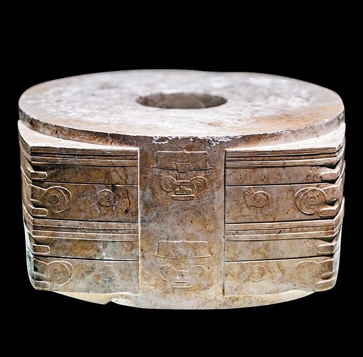

03 · CULTURE
玉的文化意义
A cultural gallery of jade — flowing through history, philosophy, and aesthetics

ORIGIN
新石器时代玉的象征意义
新石器时代的玉不仅是装饰品，更被视为连接自然、人类与神性的媒介。 当时的人们认为玉并非普通物质，而是承载生命与秩序的容器，是维系天地平衡的重要象征。 在红山文化和良渚文化遗址中发现了大量祭祀用玉器，说明玉在早期社会已经具有宗教与礼仪意义。其中玉璧与玉琮常被用于象征天空、祖先以及神圣力量。 这一象征体系深刻影响了后来的中国古代文明，并成为玉从天然矿物发展为精神价值与文化记忆载体的重要起点。